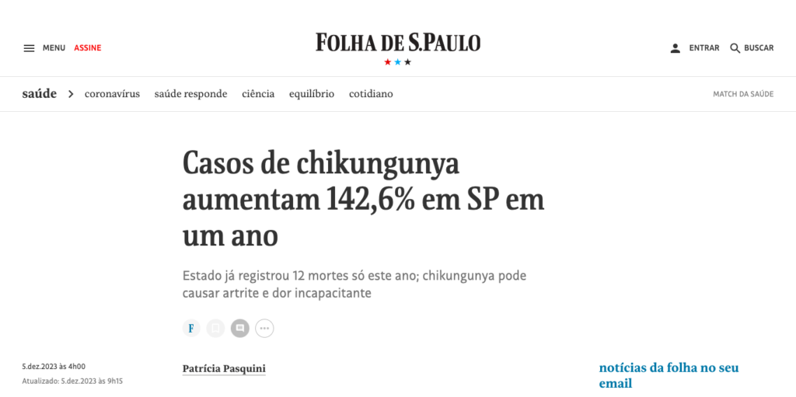

Convidado pela Folha de São Paulo, um dos maiores jornais do país, o Dr. Kleber Luz publicou uma análise detalhada sobre o cenário epidemiológico atual das doenças infecciosas no Brasil, com foco especial nas arboviroses (Dengue, Zika e Chikungunya).
Na matéria, o diretor do CePCLIN discute a complexa interação entre fatores climáticos, como o El Niño, a urbanização desordenada e a persistente dificuldade no controle do vetor, que juntos criam um "cenário perfeito" para epidemias.
"Não podemos tratar a dengue como uma fatalidade sazonal. Precisamos de políticas públicas contínuas, investimento em pesquisa e, fundamentalmente, engajamento da sociedade", escreveu o Dr. Kleber.
Para ler a matéria na íntegra na Folha de São Paulo, clique aqui.